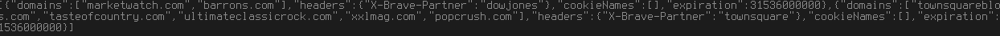
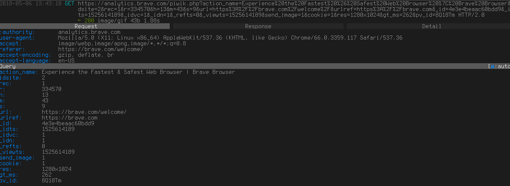

Brave Browser is a Chromium fork with many interesting features not found elsewhere, such as built-in Adblock and other extensions, fingerprinting protection, cleaner Preferences menu than other Chrome forks, and the (opt-in) ability to automatically support (pay) the websites you visit. The developers describe it as
"A browser with your interests at heart."[1]
, and the built-in privacy protections would seem to agree with that, but let's see how it stacks up when we take everything into account.
Auto-updates that can be turned off only by hacky workarounds. Google as default search engine. Analytics on Brave's home page. Two other requests made at each start of Brave. Whitelisting spyware from Facebook and Twitter.[5] Has some decent privacy protections built in, but uMatrix is still better. Some privacy features are there by default, but, it's still trying to work with advertisers (same as Mozilla did with their Sponsored Tiles). Despite claiming to be "A browser with your interests at heart."[1], it has Google as default search engine, as well as shitty forced updates. Anyway, despite the privacy protections, you should stay away from this browser - it seems to have a "mission" to switch the internet to its version of "user-respecting" ads, (we know how that turned out for Mozilla), and that's slimy and suspicious. Beyond that it has repeatedly shown itself to be dishonest and disingenuous about what it's mission and goals and operations are.
On it's website, Brave claims that "Brave fights malware and prevents tracking, keeping your information safe and secure. It’s our top priority."[6]. Yet despite this claim, Brave actually disables its tracking protections for Facebook and Twitter's spyware scripts that allow them to track people across the web.[5] Brave's spyware protections, and any claims that it makes to work in the interests of it's users, cannot be taken seriously. Brave is actively working against its users while lying to them about supposed privacy protections that it offers. This problem becomes even more serious when you take into account Brave's response to this situation:
"Loading a script from an edge-cache does not track a user without third-party cookies or equivalent browser-local storage, which Brave always blocks and always will block. In other words, sending requests and receiving responses without cookies or other means of identifying users does not necessarily create a tracking threat." [7]
This statement is just, completely wrong. Just because a website isn't able to store cookies, does not mean that it cannot uniquely identify you. Executing JavaScript spyware from Facebook and Twitter is more than enough. Blocking cookies is not going to stop them from tracking you. This isn't even information that is difficult to verify. There are many websites that you can visit, right now, to see just how much information a JavaScript program designed to track you can get. Here are a few:
https://browserleaks.com/
https://panopticlick.eff.org/
Brave will check for updates every time you run it, and you CANNOT turn it off (except through fiddling with DNS and such) ! What is the devs' answer? From their GitHub page[2]:
"We don't plan on adding in UI to disable updates, but users can easily adjust environment variables if they really want to put themselves at risk."
and
"i feel that being able to figure out how to do this is a sufficiently high bar for users who want to turn off autoupdating (to prove they know what they're doing and understand the security implications)"
So according to the devs, you have to hunt down random internet comments to be able to disable auto-updating. Brave will also update what looks like the list of its "partners" every time you run it. Extensions are also updated often.
Google is the default search engine of Brave, and the issues with it are well known and would take a book to describe them all.
Brave will connect to its home page, https://brave.com, automatically on the first run of Brave, and that page contains Piwik's analytics scripts. This is the full request: It will also make a connection to Google to download some fonts. You can disable these on subsequent runs by changing the start page.
Enabled by default, but can be disabled from the preferences menu.
Brave will make a connection to every time it is started up. It probably has something to do with their project of working with advertisers to provide more relevant targeted ads, which sounds pretty disgusting, but can be turned off ("Notify me about token promotions"). You can read more about it here[3].It will also make this request: , which downloads the rulesets for HTTPS Everywhere.
Brave Browser also contains in-built privacy protections such as HTTPS Everywhere, AdBlock, cookie blocking, script blocking, and fingerprinting protections - that are configurable site by site. This is commendable of course, but in the end, uMatrix outclasses them. Trackers, for example, easily avoid pure AdBlock (so you will be tracked by Facebook and such), and binary script blocking breaks sites. Nice effort on Brave's part though, and the fingerprinting protection I don't think is found in any other browser (but I didn't confirm if it actually works).
This article was written by digdeeper.neocities.org
Formatting changes were done by the site maintainer.
1.
Brave's website
[web.archive.org]
2.
How to stop autoupdate of brave?
[web.archive.org]
[archive.li]
3.
Basic Attention Token
[web.archive.org]
[wayback.archive-it.org]
4.
Laptop Headers
[web.archive.org]
[archive.fo]
5.
Facebook, Twitter Trackers Whitelisted by Brave Browser
[web.archive.org]
[archive.fo]
6.
Brave Browser Features
[web.archive.org]
7.
Script Blocking Exceptions Update
[web.archive.org]
[archive.fo]
This article was last edited on 2/13/2019
This article was created on 5/7/2018
If you want to edit this article, or contribute your own article(s), contact us on XMPP over in spyware@conference.nuegia.net, or visit us at the git repo on Codeberg. All contributions must be liscenced under the CC0 liscence to be accepted.